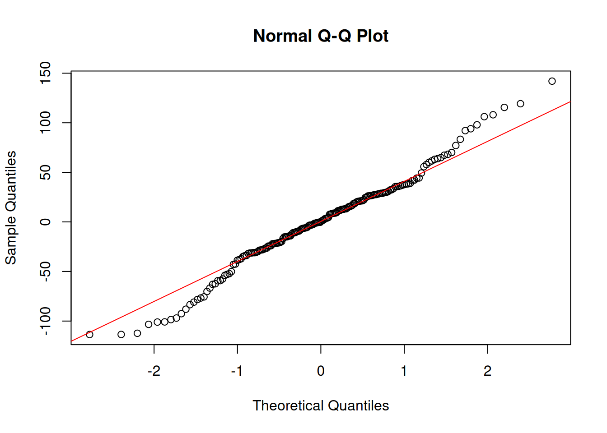

if (!require("readxl")) install.packages("readxl"); library("readxl")
Loading required package: readxl
if (!require("writexl")) install.packages("writexl"); library("writexl")
Loading required package: writexl
if (!require("tidyverse")) install.packages("tidyverse"); library("tidyverse")
Loading required package: tidyverse
── Attaching core tidyverse packages ──────────────────────── tidyverse 2.0.0 ──
✔ dplyr 1.1.4 ✔ readr 2.1.5
✔ forcats 1.0.0 ✔ stringr 1.5.1
✔ ggplot2 3.5.2 ✔ tibble 3.3.0
✔ lubridate 1.9.4 ✔ tidyr 1.3.1
✔ purrr 1.0.4
── Conflicts ────────────────────────────────────────── tidyverse_conflicts() ──
✖ dplyr::filter() masks stats::filter()
✖ dplyr::lag() masks stats::lag()
ℹ Use the conflicted package (<http://conflicted.r-lib.org/>) to force all conflicts to become errors
if (!require("car")) install.packages("car"); library("car")
Loading required package: car
Loading required package: carData
Attaching package: 'car'
The following object is masked from 'package:dplyr':
recode
The following object is masked from 'package:purrr':
some
if (!require("psych")) install.packages("psych"); library("psych")
Loading required package: psych
Attaching package: 'psych'
The following object is masked from 'package:car':
logit
The following objects are masked from 'package:ggplot2':
%+%, alpha
if (!require("afex")) install.packages("afex"); library("afex")
Loading required package: afex
Loading required package: lme4
Loading required package: Matrix
Attaching package: 'Matrix'
The following objects are masked from 'package:tidyr':
expand, pack, unpack
************
Welcome to afex. For support visit: http://afex.singmann.science/
- Functions for ANOVAs: aov_car(), aov_ez(), and aov_4()
- Methods for calculating p-values with mixed(): 'S', 'KR', 'LRT', and 'PB'
- 'afex_aov' and 'mixed' objects can be passed to emmeans() for follow-up tests
- Get and set global package options with: afex_options()
- Set sum-to-zero contrasts globally: set_sum_contrasts()
- For example analyses see: browseVignettes("afex")
************
Attaching package: 'afex'
The following object is masked from 'package:lme4':
lmer
if (!require("emmeans")) install.packages("emmeans"); library("emmeans")
Loading required package: emmeans
Welcome to emmeans.
Caution: You lose important information if you filter this package's results.
See '? untidy'
if (!require("easystats")) install.packages("easystats"); library("easystats")
if (!require("psychTools")) install.packages("psychTools"); library("psychTools")
Loading required package: psychTools
Attaching package: 'psychTools'
The following object is masked from 'package:car':
recode
The following object is masked from 'package:dplyr':
recode
if (!require('report')) install.packages('report'); library('report')if (!require('papaja')) install.packages("papaja"); library('papaja')
Loading required package: papaja
Loading required package: tinylabels
Attaching package: 'papaja'
The following object is masked from 'package:parameters':
ci
The following object is masked from 'package:bayestestR':
ci
if (!require('knitr')) install.packages('knitr'); library('knitr')
Loading required package: knitr
if (!require('ggforce')) install.packages('ggforce'); library('ggforce')
Loading required package: ggforce
if (!require('Hmisc')) install.packages('Hmisc'); library('Hmisc')
Loading required package: Hmisc
Attaching package: 'Hmisc'
The following object is masked from 'package:psych':
describe
The following objects are masked from 'package:dplyr':
src, summarize
The following objects are masked from 'package:base':
format.pval, units
if (!require('gtsummary')) install.packages('gtsummary'); library('gtsummary')
Reaction Days Subject
Min. :194.3 Min. :0.0 308 : 10
1st Qu.:255.4 1st Qu.:2.0 309 : 10
Median :288.7 Median :4.5 310 : 10
Mean :298.5 Mean :4.5 330 : 10
3rd Qu.:336.8 3rd Qu.:7.0 331 : 10
Max. :466.4 Max. :9.0 332 : 10
(Other):120
df$Days <-as.factor(df$Days)
describeBy(sleepstudy, group = sleepstudy$Days)
Descriptive statistics by group
group: 0
vars n mean sd median trimmed mad min max range skew
Reaction 1 18 256.65 32.13 253.41 256.2 27.47 199.05 321.54 122.49 0.3
Days 2 18 0.00 0.00 0.00 0.0 0.00 0.00 0.00 0.00 NaN
Subject 3 18 9.50 5.34 9.50 9.5 6.67 1.00 18.00 17.00 0.0
kurtosis se
Reaction -0.7 7.57
Days NaN 0.00
Subject -1.4 1.26
------------------------------------------------------------
group: 1
vars n mean sd median trimmed mad min max range skew
Reaction 1 18 264.5 33.43 272.96 265.8 38.80 194.33 313.81 119.47 -0.54
Days 2 18 1.0 0.00 1.00 1.0 0.00 1.00 1.00 0.00 NaN
Subject 3 18 9.5 5.34 9.50 9.5 6.67 1.00 18.00 17.00 0.00
kurtosis se
Reaction -0.77 7.88
Days NaN 0.00
Subject -1.40 1.26
------------------------------------------------------------
group: 2
vars n mean sd median trimmed mad min max range skew
Reaction 1 18 265.36 29.47 263.57 265.42 30.02 202.98 326.88 123.9 0.04
Days 2 18 2.00 0.00 2.00 2.00 0.00 2.00 2.00 0.0 NaN
Subject 3 18 9.50 5.34 9.50 9.50 6.67 1.00 18.00 17.0 0.00
kurtosis se
Reaction -0.41 6.95
Days NaN 0.00
Subject -1.40 1.26
------------------------------------------------------------
group: 3
vars n mean sd median trimmed mad min max range skew
Reaction 1 18 282.99 38.86 281.19 283.89 40.84 204.71 346.86 142.15 -0.08
Days 2 18 3.00 0.00 3.00 3.00 0.00 3.00 3.00 0.00 NaN
Subject 3 18 9.50 5.34 9.50 9.50 6.67 1.00 18.00 17.00 0.00
kurtosis se
Reaction -0.89 9.16
Days NaN 0.00
Subject -1.40 1.26
------------------------------------------------------------
group: 4
vars n mean sd median trimmed mad min max range skew
Reaction 1 18 288.65 42.54 282.48 288.89 46.56 207.72 365.73 158.02 0.13
Days 2 18 4.00 0.00 4.00 4.00 0.00 4.00 4.00 0.00 NaN
Subject 3 18 9.50 5.34 9.50 9.50 6.67 1.00 18.00 17.00 0.00
kurtosis se
Reaction -0.77 10.03
Days NaN 0.00
Subject -1.40 1.26
------------------------------------------------------------
group: 5
vars n mean sd median trimmed mad min max range skew
Reaction 1 18 308.52 51.77 307.32 307.67 40.01 215.96 414.69 198.73 0.09
Days 2 18 5.00 0.00 5.00 5.00 0.00 5.00 5.00 0.00 NaN
Subject 3 18 9.50 5.34 9.50 9.50 6.67 1.00 18.00 17.00 0.00
kurtosis se
Reaction -0.47 12.20
Days NaN 0.00
Subject -1.40 1.26
------------------------------------------------------------
group: 6
vars n mean sd median trimmed mad min max range skew
Reaction 1 18 312.18 63.17 294.11 309.46 58.04 213.63 454.16 240.53 0.53
Days 2 18 6.00 0.00 6.00 6.00 0.00 6.00 6.00 0.00 NaN
Subject 3 18 9.50 5.34 9.50 9.50 6.67 1.00 18.00 17.00 0.00
kurtosis se
Reaction -0.61 14.89
Days NaN 0.00
Subject -1.40 1.26
------------------------------------------------------------
group: 7
vars n mean sd median trimmed mad min max range skew
Reaction 1 18 318.75 50.10 333.17 318.94 38.79 217.73 416.69 198.97 -0.36
Days 2 18 7.00 0.00 7.00 7.00 0.00 7.00 7.00 0.00 NaN
Subject 3 18 9.50 5.34 9.50 9.50 6.67 1.00 18.00 17.00 0.00
kurtosis se
Reaction -0.54 11.81
Days NaN 0.00
Subject -1.40 1.26
------------------------------------------------------------
group: 8
vars n mean sd median trimmed mad min max range skew
Reaction 1 18 336.63 60.20 336.01 336.2 47.29 224.3 455.86 231.57 -0.04
Days 2 18 8.00 0.00 8.00 8.0 0.00 8.0 8.00 0.00 NaN
Subject 3 18 9.50 5.34 9.50 9.5 6.67 1.0 18.00 17.00 0.00
kurtosis se
Reaction -0.48 14.19
Days NaN 0.00
Subject -1.40 1.26
------------------------------------------------------------
group: 9
vars n mean sd median trimmed mad min max range skew
Reaction 1 18 350.85 66.99 365.32 350.73 23.30 237.25 466.35 229.11 -0.37
Days 2 18 9.00 0.00 9.00 9.00 0.00 9.00 9.00 0.00 NaN
Subject 3 18 9.50 5.34 9.50 9.50 6.67 1.00 18.00 17.00 0.00
kurtosis se
Reaction -0.64 15.79
Days NaN 0.00
Subject -1.40 1.26
ggplot(df, aes(x = Days, y = Reaction)) +stat_summary(fun = mean, geom ="line", color ="steelblue", size =1.2) +stat_summary(fun.data = mean_se, geom ="errorbar", width =0.3) +labs(title ="Promedio de tiempo de reacción por día",x ="Días de privación de sueño", y ="Tiempo de reacción (ms)") +theme_minimal()
Warning: Using `size` aesthetic for lines was deprecated in ggplot2 3.4.0.
ℹ Please use `linewidth` instead.
`geom_line()`: Each group consists of only one observation.
ℹ Do you need to adjust the group aesthetic?
ggplot(df, aes(x =factor(Days), y = Reaction)) +geom_boxplot(fill ="lightblue") +labs(title ="Distribución del tiempo de reacción por día",x ="Día", y ="Tiempo de reacción (ms)") +theme_minimal()
ggplot(sleepstudy, aes(x = Days, y = Reaction, group = Subject)) +geom_line(alpha =0.3) +labs(title ="Tiempo de reacción por sujeto",x ="Días", y ="Tiempo de reacción") +theme_minimal()
Objetivos
General
Evaluar el efecto de la privación de sueño progresiva sobre el rendimiento cognitivo, medido a través del tiempo de reacción, en participantes sometidos a restricción del sueño durante un período de 10 días consecutivos.
Hipotesis
El tiempo de reacción de los participantes aumenta progresivamente a medida que se acumulan los días de privación de sueño, reflejando un deterioro en el rendimiento cognitivo.
Supuestos y modelo
model <-aov_ez(id ="Subject",dv ="Reaction",within ="Days",data = sleepstudy)
qqnorm(residuals(model))qqline(residuals(model), col ="red")

check_model(model)
Not enough model terms in the conditional part of the model to check for
multicollinearity.
Shapiro-Wilk normality test
data: residuals(model)
W = 0.98378, p-value = 0.03495
La prueba de Shapiro-Wilk fue significativa (W = 0.98, p = 0.035), lo que indica una desviación de la normalidad en los residuos
summary(model)
Univariate Type III Repeated-Measures ANOVA Assuming Sphericity
Sum Sq num Df Error SS den Df F value Pr(>F)
(Intercept) 16039253 1 250618 17 1087.979 < 2.2e-16 ***
Days 166235 9 151101 153 18.703 < 2.2e-16 ***
---
Signif. codes: 0 '***' 0.001 '**' 0.01 '*' 0.05 '.' 0.1 ' ' 1
Mauchly Tests for Sphericity
Test statistic p-value
Days 0.00021902 5.1549e-08
Greenhouse-Geisser and Huynh-Feldt Corrections
for Departure from Sphericity
GG eps Pr(>F[GG])
Days 0.36903 5.463e-09 ***
---
Signif. codes: 0 '***' 0.001 '**' 0.01 '*' 0.05 '.' 0.1 ' ' 1
HF eps Pr(>F[HF])
Days 0.4693648 7.076552e-11
Se realizó un ANOVA de medidas repetidas para evaluar el efecto de la privación de sueño (factor Days) sobre el tiempo de reacción. El análisis mostró un efecto significativo de los días, F(9, 153) = 18.70, p < .001, lo que indica que el rendimiento cognitivo cambió significativamente a lo largo del tiempo.
La prueba de esfericidad de Mauchly resultó significativa (p < .001), lo que sugiere que se violó el supuesto de esfericidad. Por ello, se aplicaron correcciones de Greenhouse–Geisser y Huynh–Feldt, ambas confirmando la significancia del efecto (p < .001).
En conjunto, estos resultados indican que la privación progresiva de sueño afecta significativamente el tiempo de reacción, respaldando la hipótesis planteada.
sleepstudy$Days <-as.numeric(sleepstudy$Days)reg_model <-lmer(Reaction ~ Days + (1| Subject), data = sleepstudy)summary(reg_model)
Linear mixed model fit by REML. t-tests use Satterthwaite's method [
lmerModLmerTest]
Formula: Reaction ~ Days + (1 | Subject)
Data: sleepstudy
REML criterion at convergence: 1786.5
Scaled residuals:
Min 1Q Median 3Q Max
-3.2257 -0.5529 0.0109 0.5188 4.2506
Random effects:
Groups Name Variance Std.Dev.
Subject (Intercept) 1378.2 37.12
Residual 960.5 30.99
Number of obs: 180, groups: Subject, 18
Fixed effects:
Estimate Std. Error df t value Pr(>|t|)
(Intercept) 251.4051 9.7467 22.8102 25.79 <2e-16 ***
Days 10.4673 0.8042 161.0000 13.02 <2e-16 ***
---
Signif. codes: 0 '***' 0.001 '**' 0.01 '*' 0.05 '.' 0.1 ' ' 1
Correlation of Fixed Effects:
(Intr)
Days -0.371
Se ajustó un modelo lineal mixto pra predecir el tiempo de reacción a partir del número de días de privación de sueño, incluyendo un intercepto aleatorio por sujeto. Los resultados mostraron que el tiempo de reacción aumenta significativamente con el paso de los días (β = 10.47, SE = 0.80, t(161) = 13.02, p < .001), lo que indica un deterioro progresivo del rendimiento cognitivo asociado a la restricción del sueño.